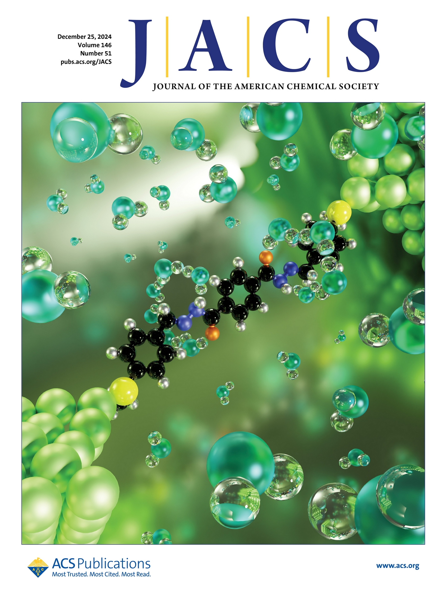
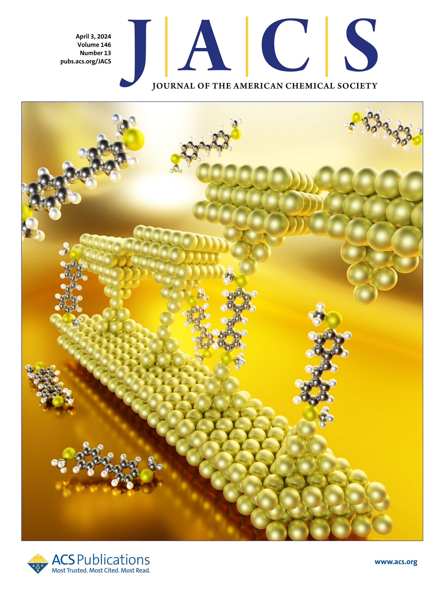
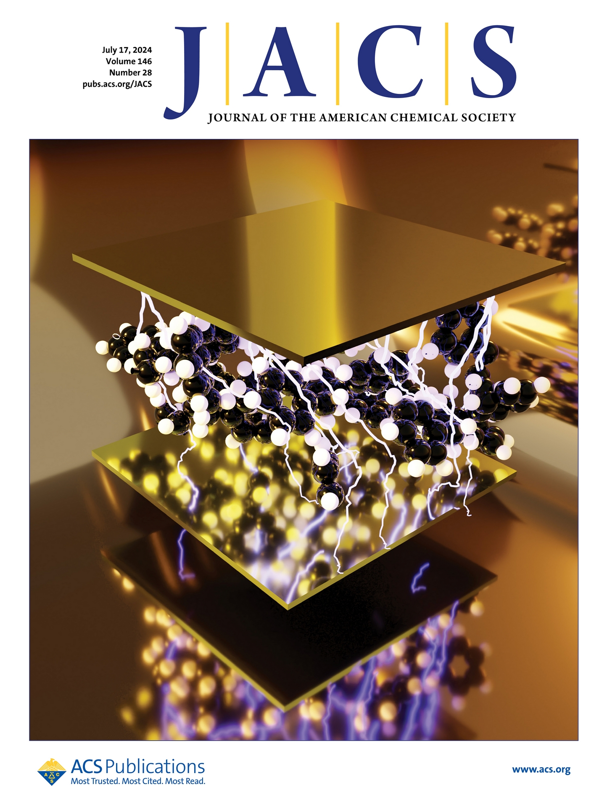

7.Electric Field-Induced Sequential Prototropic Tautomerism in Enzyme-like Nanopocket Created by Single Molecular Break Junction
PA Sreelakshmi, Rahul Mahashaya, Susanne Leitherer, Umar Rashid, Joseph M. Hamill, Manivarna Nair, Pachaiyappan Rajamalli and Veerabhadrarao Kaliginedi
J. Am. Chem. Soc. 2024, 146, 51, 35242–35251
https://doi.org/10.1021/jacs.4c12423
Highlighted as Journal front Cover

9.Quantum Interference Effect in Saturated Systems: Effect of Anchoring Group Position on Conductance of Bipiperidines and their in-situ Derived Dithiocarbamates
Umar Rashid, Abdalghani H. S. Daaoub, PA. Sreelakshmi, Sara Sangtarash, Hatef Sadeghi, Veerabhadrarao Kaliginedi
Angew. Chem. Int. Ed. 2025, e202513806.
https://doi.org/10.1002/anie.202513806
Highlighted as Hot topic: Quantum interferance

8.Mapping the extended ground state reactivity landscape of a photo switchable molecule at a single molecular level
Umar Rashid, Leonardo Medrano Sandonas, Elarbi Chatir, Zakaria Ziani, PA
Sreelakshmi,1
Saioa Cobo, Rafael Gutierrez, Gianaurelio Cuniberti, Veerabhadrarao
Kaliginedi1
J. Am. Chem. Soc. 2025, 147, 1, 830–840
https://doi.org/10.1021/jacs.4c13531


6.Chemistry of the Au–Thiol Interface through the Lens of Single-Molecule Flicker Noise Measurements
Umar Rashid, William Bro-Jørgensen, KB Harilal, PA Sreelakshmi, Reetu Rani Mondal, Varun Chittari Pisharam, Keshaba N. Parida*, K. Geetharani*, Joseph M. Hamill*, and Veerabhadrarao Kaliginedi*
J. Am. Chem. Soc. 2024, 146, 13, 9063–9073
https://doi.org/10.1021/jacs.3c14079
Highlighted as Journal front Cover



5.Dithienylethene-Based Single Molecular Photothermal Linear Actuator
Umar Rashid, Elarbi Chatir, Leonardo Medrano Sandonas, PA Sreelakshmi, Arezoo Dianat, Rafael Gutierrez*, Gianaurelio Cuniberti, Saioa Cobo*, Veerabhadrarao Kaliginedi*
Angew. Chem. Int. Ed. 2023, 62, e202218767
https://doi.org/10.1002/anie.202218767
Featured in Hot Topic:Robotics
4.Extraordinary Electrical Conductance of Non-conducting Polymers Under Vibrational Strong Coupling
Sunil Kumar, Subha Biswas, Umar Rashid, Kavya S. Mony, Robrecht M. A. Vergauwe, Veerabhadrarao Kaliginedi*, Anoop Thomas*
J. Am. Chem. Soc. 2024, 146, 28, 18999–19008
https://doi.org/10.1021/jacs.4c03016
Highlighted as Journal front Cover


3.Making the Most of Nothing: One-class Classification forSingle-molecule Transport Studies
William Bro-Jørgensen, Joseph M. Hamill, Gréta Mezei, Brent Lawson, Umar Rashid, András Halbritter, Maria Kamenetska,Veerabhadrarao Kaliginedi,and Gemma C. Solomon
ACS Nanosci. Au 2024, 4, 4, 250–262
https://doi.org/10.1021/acsnanoscienceau.4c00015

2.Modulating the charge transport in metal│molecule│metal junctions via electrochemical gating
Anas Akhtar#, Umar Rashid#, Charu Seth, Sunil Kumar, Peter Broekmann, Veerabhadrarao Kaliginedi,# Equal contribution with first author
Electrochimica Acta, Volume 388, 2021,138540, ISSN 0013-4686,
https://doi.org/10.1016/j.electacta.2021.138540

1.Imidazolium Based Surface Active Ionic Liquids: Promising Boosters to Enhance the Radical Scavenging and Antioxidant Activity of Conventional Surfactant Solubilised Quercetin.
Butt, F. A.; Bhat, M. M.; Rashid, U.; Lone, I. A.; Bhat, P. A.; Bhat, S. A.; Rather, M. A.; Rather, G. M.; Bhat, M. A.
Catal. Lett. 2022, 152 (5), 1276–1285.
https://doi.org/10.1007/s10562-021-03738-x